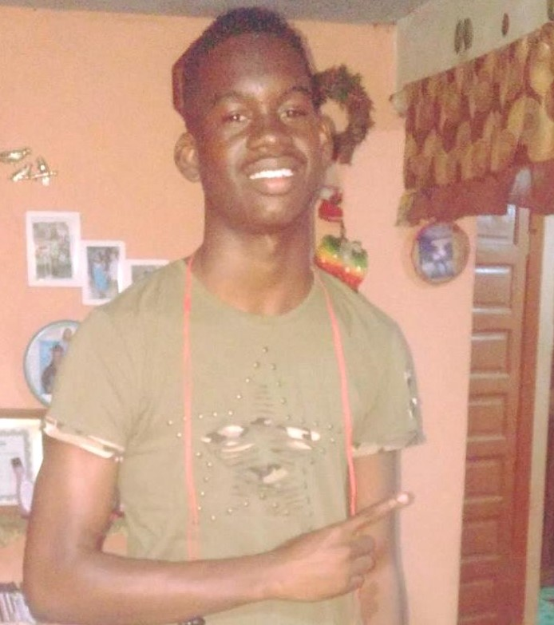

Fundamentals of Computing
By Dale Casimiro
Creater

My name is Dale Casimiro I’m 18 years old. I graduated from sacred heart primary school in Dangriga. Then i complete my secondary educatation at Ecumenical High School which is aslo Dangriga. My hubbles are playing football and DJing live on my Podcast and on youtube channel.Htmel is aslo fun to do somet times.